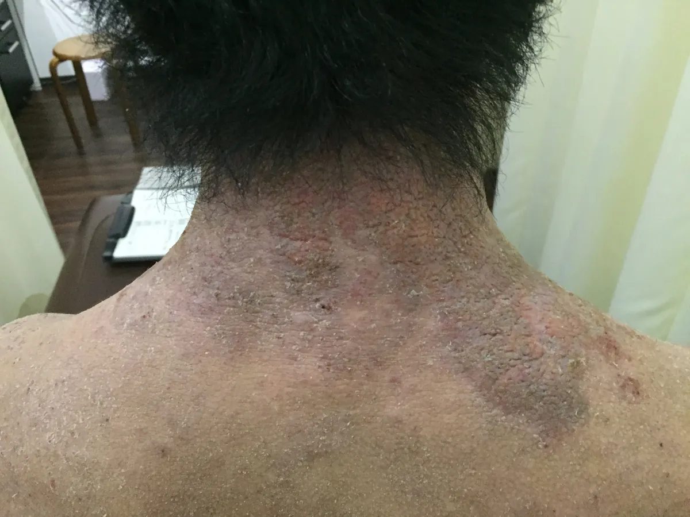
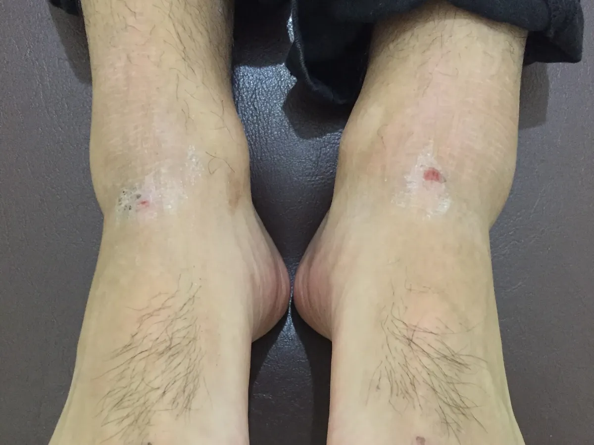

薬だけでは波が戻る、ストレスや睡眠で肌の状態が揺れやすい方へ。皮膚だけでなく、身体全体の状態から確認します。
アトピーや慢性的な皮膚症状は、皮膚表面の問題だけでなく、かゆみによる睡眠低下、ストレス反応、胃腸の状態、冷えや緊張などが複雑に関わることがあります。
当院では、病院や薬を否定するのではなく、薬だけでは不安が残る方のために、呼吸・循環・睡眠・食事・筋緊張・自律神経の偏りを確認しながら、負担の少ない範囲で身体全体を整えていきます。
※医療機関での治療やお薬を否定するものではありません。お薬の変更・中止は医師の指示に従ってください。
実際の変化は一人ひとり異なりますが、
皮膚の状態だけでなく、睡眠・緊張・呼吸・疲労の出方も含めて経過を確認しています。
 初回
初回
 6か月目
6か月目

初回 6か月目
6か月目
 初回
初回

6か月目※写真は経過の一例です。得られる結果には個人差があります。
CONDITION CHECK
現在の不調が、
睡眠・ストレス・胃腸・呼吸など、
どの負担と重なりやすいかを
無料・登録なしで簡易的に確認できます。
来院時には82項目(3分程度)の詳細チェックを行い、
現在の状態をより詳しく確認できます。
研究知見はあくまで身体を理解するための参考であり、診断や治癒を保証するものではありません。症状が強い場合や急な変化がある場合は医療機関での確認を優先してください。
CASE PHOTOS
写真だけで判断せず、
どの部位がどの期間で
どのように変化しているかを確認できるよう、
改善例ごとの詳細ページへ進める導線を設けています。
来院前はステロイドを使用。食事指導と整体を併用しながら、複数部位の経過を掲載しています。
この改善例を詳しく見る前腕だけでなく、体幹部や下肢も含めた広い範囲の皮膚状態の経過を確認できます。
この改善例を詳しく見る前腕と足首を中心に、左右の部位ごとの状態変化を比較しやすい形で掲載しています。
この改善例を詳しく見る※写真は経過の一例です。得られる結果には個人差があります。
症状だけを見るのではなく、生活習慣と身体全体の状態を合わせて確認し、整いやすい状態を目指します。